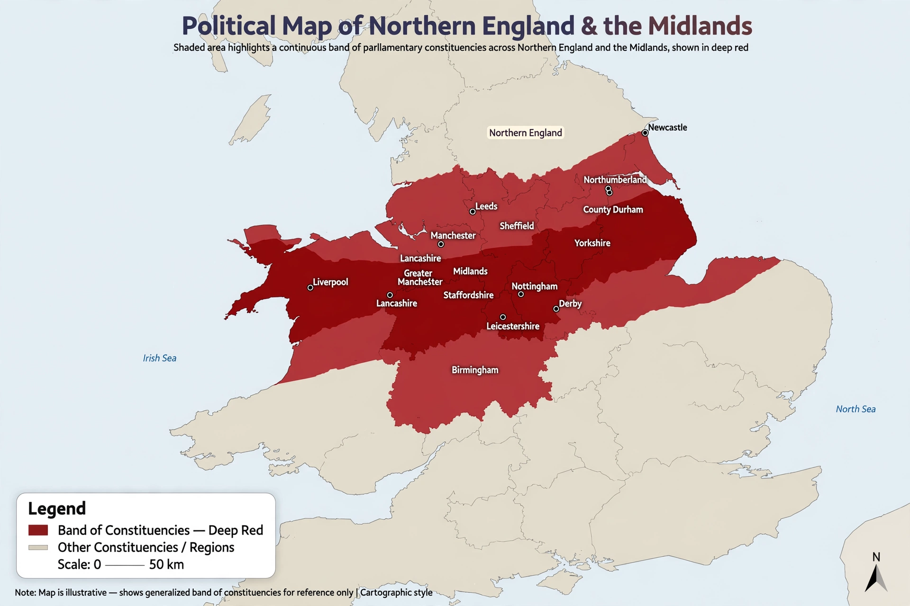

| Red wall | |
|---|---|
| Region | Northern England, the Midlands and North East Wales |
| Country | United Kingdom |
| Traditionally held by | Labour Party |
| Key election | 2019 general election |
| Coined by | James Kanagasooriam (2019) |

The red wall is a term used in British politics to describe a set of parliamentary constituencies in Northern England, the Midlands and North East Wales that historically voted strongly for the Labour Party. The term gained prominence after the 2019 general election, in which many of these seats were won by the Conservative Party under Boris Johnson, often for the first time in decades or ever.
The phrase was coined by the pollster James Kanagasooriam of Onward, who used demographic and voting data to identify a band of seats that appeared safe for Labour but were demographically trending away from the party. Writing before the 2019 election, he warned that Labour's support in these largely working-class, Leave-voting areas was more fragile than headline seat counts suggested.
At the 2019 election the Conservatives gained dozens of red wall seats, including Bishop Auckland, Blyth Valley, Bolsover, Redcar, Sedgefield (the former seat of Tony Blair), Stoke-on-Trent North and Workington. The results were widely interpreted as a realignment driven by Brexit, cultural issues and dissatisfaction with Labour leader Jeremy Corbyn. Johnson's promise to "get Brexit done" and to pursue "levelling up" investment appealed to many voters in these areas.
Labour under Keir Starmer sought to win back the red wall, and the party recovered most of the seats at the 2024 general election, although often on reduced vote shares, with Reform UK taking significant support in several constituencies. Analysts debate whether the red wall represents a durable structural shift in British politics or a contingent reaction to Brexit and party leadership.